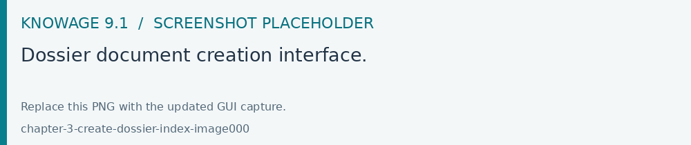
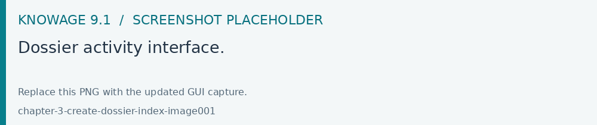
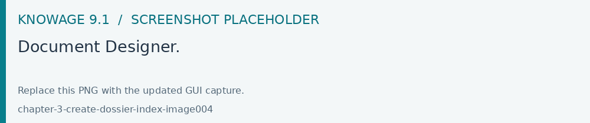
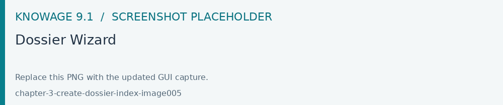
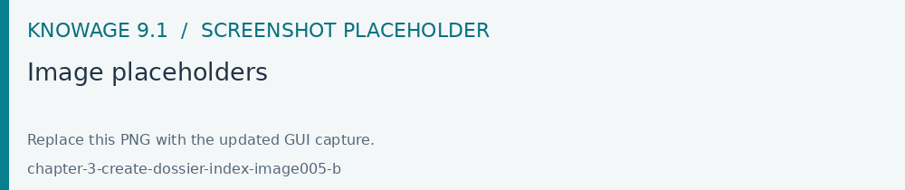
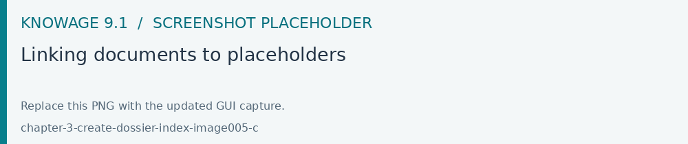
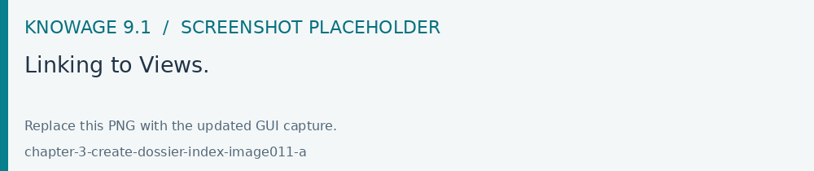
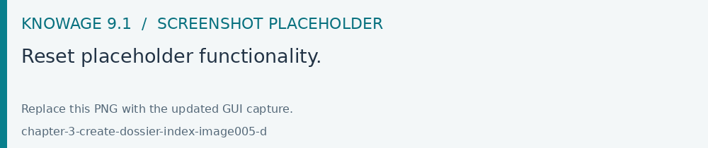
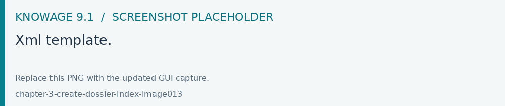
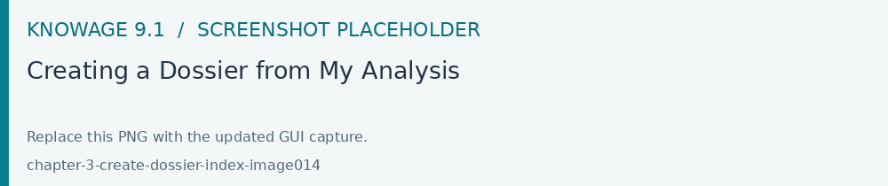

Create a Dossier
A Dossier assembles analytical content using a presentation or document template. Start with documents your role can execute, configure their parameters and generate a preview before distributing the result. Availability depends on the Dossier components installed in your edition.
A dossier document allows you to obtain a file processed starting from an input template. A typical example of using this feature is the creation of a file with variable content updated at each run. To do this, you need to create a dossier document with a well-configured XML template.
Important
Enterprise Edition
If you purchased Knowage EE, the following features are available only with the right license.
XML Template
Image adding (PPT_TEMPLATE)
Suppose you have to create a ppt/pptx file where to place the images relating to one or more reports. You have only to configure XML template defining some placeholders to be use for replacing and execute it. Below is shown an example of an XML template used for this purpose.
1<?xml version='1.0' encoding='utf-8'?>
2<DOSSIER>
3 <PPT_TEMPLATE name="PPT_TEMPLATE.pptx"/>
4 <REPORTS>
5 <REPORT label="Report-multivalue-parameter">
6 <PLACEHOLDERS>
7 <PLACEHOLDER value = "ph1"/>
8 <PLACEHOLDERS>
9 <PARAMETERS>
10 <PARAMETER type="static" dossier_url_name="state" url_name="state"
11 url_name_description="State" value="Canada"/>
12 </PARAMETERS>
13 </REPORT>
14 </REPORTS>
15</DOSSIER>
The example above is using one placeholder and one static analytical driver.
Warning
Please note that the file to be used as a template must be placed in TOMCAT_HOME/resources/<TENANT_NAME>/dossier path.
Image replacing (DOC_TEMPLATE)
Suppose that you have to draw up a document where text is static but images related to need to be updated. With this functionality you will be able to use a docx file as a template and replace images inside it. More precisely, you can configure your XML and docx templates to allow Knowage to replace specific images with new ones obtained by the execution of specified documents.
Below is shown an example of an XML template used for this purpose.
1<?xml version='1.0' encoding='utf-8'?>
2<DOSSIER>
3 <DOC_TEMPLATE name="DOC_TEMPLATE.docx" downloadable="true" uploadable="true" />
4 <REPORTS>
5 <REPORT label="DOC_01" imageName="img_DOC_01" sheetWidth="1366" sheetHeight="650" deviceScaleFactor="1.5">
6 <PARAMETERS>
7 <PARAMETER type="dynamic" dossier_url_name="family_dossier" url_name="family_document"/>
8 <PARAMETER type="dynamic" dossier_url_name="category_dossier" url_name="category_document"/>
9 </PARAMETERS>
10 </REPORT>
11 <REPORT label="DOC_02" imageName="img_DOC_02" sheetWidth="1366" sheetHeight="650" deviceScaleFactor="1.5">
12 <PARAMETERS>
13 <PARAMETER type="dynamic" dossier_url_name="family_dossier" url_name="family_document"/>
14 <PARAMETER type="dynamic" dossier_url_name="category_dossier" url_name="category_document"/>
15 </PARAMETERS>
16 </REPORT>
17 <REPORT label="DOC_03" imageName="img_DOC_03" sheetWidth="1366" sheetHeight="650" deviceScaleFactor="1.5" />
18 </REPORTS>
19</DOSSIER>
Note that if the document used to replace an image does not have any parameter, the tag REPORT must be closed inline as you can see for the document with label “DOC_03” in the example above.
Also docx document must be modified to be compatible with the replacer.
In particular: - images in the document must be inserted by copying and pasting from the file system (or using the “insert image” feature); - imageName in the XML template must match the title (alternative text) of the image in the docx; - each image must have a unique name.
Warning
To optimize dossier creation procedure, same document will be executed more than one time if and only if its parameters change. In that scenario sheetHeight, sheetWidth and deviceScaleFactor will be set for every execution. Moreover, if parameters don’t change, document will be executed only one time and sheetHeight, sheetWidth and deviceScaleFactor values will stay the same as the first execution.
My first dossier
You can create a dossier document by using the plus button and choosing “Generic Document”. Proceed by filling in the necessary fields, selecting “Collaboration” as the type and “Dossier engine” as the engine and then choosing the XML template. If the documents to be executed have one or more analytical drivers, these drivers must be added to the dossier document from the DRIVER tab.

Fig. 538 Dossier document creation interface.
After saving the document, you can access the dossier activity page by clicking the play button.

Fig. 539 Dossier activity interface.
If one or more dynamic analytic drivers are set, the required inputs must be provided in the sliding menu that appears from the right. You will then go to the dossier activity page.
If upload/download are enabled, docx file template can be uploaded/downloaded using the three dot menu on the top right of the “Details” tab.
Warning
This feature is available only for image replacing procedure.
To execute the document, enter a name for the activity and click LAUNCH ACTIVITY. A new task will be started in the STARTED state and a new row will be visible in the table below. At the end of the execution of the task, the processed file can be downloaded with the appropriate download icon.
Each line allows you to see useful information on the activity such as the values of the drivers used for the execution by clicking on the info icon, download the processed file by clicking on the download icon and remove itself by clicking on the trash icon.
Dossier Wizard
Starting from Knowage 8.2 it is possible to configure the dossier template document and his xml template easily using the Dossier Wizard.
You can use this feature opening the wizard from an dossier document already saved or directly from the workspace.
Starting from a saved document
Click the Open Designer link inside the dossier document.

Fig. 540 Document Designer.
The following wizard page appears requesting the document template (docx or pptx format) and the image prefix.

Fig. 541 Dossier Wizard
The Uploadable/Downloadable features can be enabled in order to allow the downloading and updating of the document template inside the dossier document.
By clicking on NEXT the new popup will show the list of image placeholders found inside the document template.

Fig. 542 Image placeholders
By clicking the Plus button it is possible to link a source document to the image placeholder.

Fig. 543 Linking documents to placeholders
After selecting the document you need to select the parameters (drivers or views) to be linked to the placeholder. In the example above there is one driver Family. The wizard allows to specify how the parameter of the driver should be feed by selecting the Link Type to the driver: Dynamic, Static or Inherit type. Inherit means that the parameter selected will be the same used in the selected source document. We kindly suggest to use “Inherit” for simplifying configuration assets.
On the other hand by clicking the Plus icon the image placeholders can be linked also to Views.

Fig. 544 Linking to Views.
To rollback and reset changes, just click the “Reset placeholder” icon on the image placeholders panel.

Fig. 545 Reset placeholder functionality.
As a last step remains clicking SAVE or Save and Run. By saving the xml template should be updated and visible on the History tab.

Fig. 546 Xml template.
Starting from the workspace
Another way to run the Dossier Wizard is starting from my Workspace. Select My Analysis for starting a new Dossier document with Dossier Wizard.

Fig. 547 Creating a Dossier from My Analysis
Note: End users can create dossier documents using views only as drivers are not allowed to use for them.